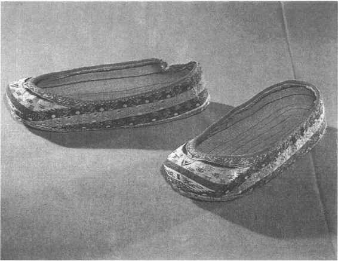

第二十三章
古代交通与交通工具

第一节
古代的道路
一、战国以前的道路
道路是人类社会活动的产物。人类为了生存和发展，必须不断地寻找和扩大生活的空间及范围，必须跋山涉水、披荆斩棘，其中包括制造和利用交通工具，以及与阻碍这些活动的一切自然的或社会的力量进行斗争。
在石器时代，氏族和部落的迁徙与交流促进了远古社会交通的发展。生产的发展和人口的繁衍都必然带来各地聚落之间的交通的发展，包括道路的拓宽、整修和管理，也包括独木舟和独木桥的产生。氏族社会末期的各部落联盟大规模的兼并战争则使交通的发展进一步加速了。黄河中游一带的黄帝轩辕氏与黄河下游地区的炎帝神农氏曾经发生三次大战；黄帝又与华北的蚩尤展开过激战，这个传说中的华夏始祖一生“披山通道，未尝宁居”，他率领的军队“迁徙往来无常处，以师兵为营卫”，［1］这种战争过程中军队的调动和物资的运输，都需要相对通畅的道路。
公元前2100年左右，中国历史上出现了夏王朝。夏原来是一个部落联盟的名称，是由夏后氏、有扈氏等12个姒姓的氏族部落组成的。开始主要兴起在河南嵩山周围和伊水、洛水流域，很快扩展到山西南部，并向东发展到河北、河南、山东交界处。在这一广阔的区域内，夏人主要从事农业生产，并保持着同周围其他部落联盟的交往。
在夏的东部，有日渐强大的商族。商人的活动范围更加广阔。早期经常迁徙，并发明了便于迁徙的车辆，当时还设立了“车正”之职专司车旅交通。相传一位名叫奚仲的人，就曾担任过夏朝的车正。用牛马挽车已经成为部落酋长和有一定社会地位的新生贵族身份的标志，史称“尊卑上下，各有等级”［2］。杰出的商族首领汤经过十余次大规模战争，消灭了夏，建都于西亳（今河南偃师），五次迁都而在殷（今河南安阳一带）落下脚。商王武丁不断对外作战，使疆域扩大到整个黄河流域。
在夏、商时代，出于迁徙和战争的需要，陆路交通应当已经颇具规模了，可惜文献未有专门记载。《尚书》中说夏禹“随山刊木，奠高山大川”；《史记》进一步说夏禹在治水的13年里“陆行乘车，水行乘船，泥行乘橇，山行乘樺”，走遍天下九州。对于夏代的车、船、橇、樺已无从考证，但当时已经有了一定规模的陆路和水路交通，应是没有疑义的。到了周代，中央政府和各地诸侯都很注意道路的修筑和保护，从典籍中可以比较详细地了解到当时的有关情况。
据《国语周语》记载，西周时期的道路按照一定时间进行修固，泽潦按照一定时间去筑坝垒堤，江河之上要依据不同条件造桥，这一切都是“先王之教”；还规定道路旁要种植树木，以树木作为一种标记；域邦四郊要设置房屋，储备些食品，作为防护道路的兵士和修治道路的丁夫止息之处，等等。此外，还设置司空之官专门管理路政。20世纪90年代，考古工作者在陕西周原遗址发现一段三千多年前的大型道路遗址，是西周最宽的道路。这条西周古道位于扶风县法门镇齐家村东北，呈东南西北走向。清理出的部分路段长约四十多米，路面宽约十米，中间略高，两边略低，路面上有8条明显的车辙痕迹，可供4辆马车并排通行。在《诗经》、《左传》、《史记》等文献中，有很多关于周代道路的记载。《诗经》中记载有的贵族女子出嫁，上百辆车子迎送（《鹊巢》）；有时军队出征，路上排列的战车多达3000辆（《采芑》）；有的官员乘车在路上“驱马悠悠”（《载驰》）；人们普遍称颂鲁国的道路平坦宽阔（《南山》、《载驱》）等等，可见当时道路的规模和质量是不错的。
春秋时期，各国基本上都是按照西周时期的办法管理道路的，有的诸侯国如陈国对道路管理不好，曾受到全社会的舆论谴责。到了战国时期，陆路和水路交通都有了较大的发展，各地开辟了不少重要的道路，其中最为著名的是由陕入川的金牛道。
金牛道，亦称石牛道，自陕西汉中地区的勉县向西南行，经七盘岭而入四川境内，又经由朝天门驿而趋剑门关，中间包含许多架设于悬崖峭壁间的栈道，形势十分险要。（图23—1）相传战国时秦惠王欲伐蜀，因山道险峻，作五头石牛，声言能屙金，以欺蜀王。蜀王命五丁开道引之，秦军随而灭蜀，“石牛”、“金牛”即由此得名。又有另一种传说是：上天为蜀生了五丁力士，力能搬山，秦王献美女与蜀王，蜀王遣五丁迎女，途中见一大蛇入山穴中，五丁共牵蛇，山崩，压死五丁，秦女皆化为石，而山遂分为五岭。李白在《蜀道难》中所唱“地崩山摧壮士死，然后天梯石栈方钩连”即用此意。这条道路后代屡加修建，元明以后称“南栈”，又名“蜀栈”，是由陕入川的重要交通线。
图23-1 剑门关故址
战国时由于社会经济的发展，水利和交通也有了相应的发展，各个地区不同形式的交往使经济发展上的不平衡逐渐减少，为全国的统一准备了条件。在频繁的战争中，大规模的军队调动和战争移民，对陆路交通的发展起了一定的促进作用。战争可能在局部地区对交通有所妨碍，甚至造成道路和桥梁的破坏，但从全局来看，全国从分裂走向统一的战争过程，使更多新的道路得以开辟，更多桥梁得以架设，更多的人群得以流动，更多的车船得以制造，无疑对交通的发展是有利的。秦赵长平之战，赵国出兵40万人；秦为了灭楚，动员兵力达60万人之多；公元前318年，魏、赵、燕、楚五国合纵攻秦；公元301年，齐、韩、晋、秦、楚而大举伐齐……这一系列大规模的战争行动，没有陆路和水路交通方面的条件是很难进行的，所以，战国时期的陆路交通，已经基本上构成了古代交通的网络。
二、秦汉时期的道路
秦始皇统一六国后，为了巩固政权、控制全国局势并抵御北方匈奴的骚扰，在战国时期交通网络的基础上，修筑了著名的驰道与直道。
（一）驰道
秦代的驰道是公元前220年开始修治的，以国都咸阳为中心，通向全国各个重要地区，尤其是六国的故都。
驰道是专供秦始皇出巡时行驶车马的道路，即御道。《汉书·贾山传》载：“秦为驰道于天下，东穷燕齐，南极吴楚，江湖之上，濒海之观毕至。道广五十步，三丈而树。”驰道上就连皇太子也不得擅自通行，直到汉代仍是一条御用道路。《汉书·成帝纪》说汉武帝做太子时“不敢绝驰道”。他当上皇帝之后，特别优待他的大乳母，“有诏得令乳母乘车行驰道中”。不过，随着时间的推移，后来汉代的驰道已不止为皇帝所专用了，只要有皇帝或太后、皇后的诏令，其他皇室成员也可以行于驰道之上。
实际上在秦末战争年代驰道御用的规定就已经没有那样严格了。刘邦的部下周勃，攻打反叛的燕王臧荼，在易下消灭了敌军，他就是利用驰道的交通便利而迅速出兵取胜的。
驰道两旁的行道树，是每隔三丈便栽种一棵松树，既用来标明路线，也用来计算里程。在皇帝专用大路的两旁，有可以让百姓行走的小路。修筑驰道时，路上垫土全部夯实。驰道的修成，对后来的交通提供了极大的便利条件。
魏晋以后，驰道虽然完全失去了皇家大道的意义，但是许多地区的驰道仍然是重要的交通干线，政府对驰道的维修养护一直很重视。唐代洛阳附近的驰道两旁，居住着许多王公贵族，为的是出门方便。
（二）直道
秦代的直道只有一条，是由咸阳北部的云阳县甘泉山循子午岭主脉北行，直到定边县南，再东北行进入鄂尔多斯草原，在昭君坟附近渡过黄河，到达内蒙古河套地区的九原郡。两地南北遥对，史称“堑山堙谷，千八百里”，实际上全长为七百多公里。
直道的修筑主要是从战略上考虑的。匈奴长期以来活动于阴山南北，远在秦统一六国之前，就经常向南进攻，秦国以及东部的赵、燕诸国常受其扰，首当其冲的便是秦国。匈奴控制的地区，南边达到宁夏固原、陕西榆林一线，即战国时的秦长城以北的鄂尔多斯草原和六盘山、横山北麓，距咸阳最近处仅250公里。匈奴的轻装骑兵一昼夜疾行就可到达。秦始皇以前的秦国统治者，一般都对匈奴采取消极防御的战略，征发民众修筑长城。但长城并没有也不可能完全保障北方的安宁。秦始皇统一全国后，即派蒙恬率30万大军北征，把匈奴驱逐到阴山以北。秦王朝在新统一的地区建立了34座县城，从内地迁徙大批人民到这些地方定居，并在今包头市以西设置了九原郡进行统筹管理。在驱逐匈奴的第二年（前212）下令修筑直道，以便有效地统治这一片国土。
直道为什么以云阳为起点呢？因为云阳距国都咸阳不远，其间有往来方便的交通大道。咸阳至云阳间修有驰道，道的两旁都建起了垣墙，又称甬道。车辆驶过如同穿行巷中。云阳县北有座甘泉山，峰峦起伏，云高气爽，风景十分秀丽，是避暑的胜地。山上建有林光宫，秦始皇经常去那里游幸。战国时期，甘泉是子午岭下的一个险要关隘，起着屏蔽咸阳的作用，秦始皇去林光宫，也包含着一定的军事意义，所以直道也从这里为起点。
直道从甘泉山向北伸展，有一半蜿蜒在子午岭上。子午岭位于陕北与陇东之间，作南北走向，为泾、洛两河的分水岭，岭的北段为黄土丘陵，南段为土石山区，大致可以在甘肃的华池县东南为分界线。直道从甘泉山循岭北行经过石门关、雕岭关、兴隆关等诸多关隘，到达长城的营盘山、铁角城一带，然后从定边开始，向东北穿越鄂尔多斯大草原。
从子午岭上现存的直道遗迹看，直道是一直循着子午岭主脉修筑的，因为鄂尔多斯草原也散布着许多丘陵台地，所以直道经过草原时也免不了一番“堑山堙谷”的工程。在今伊克昭盟东胜县城西南的漫赖乡，曾发现一段直道遗迹，路面残宽约二十二米，路基的断面暴露极为明显，用当地的红色砂岩土填筑，由此向北和西南，均可以见到山冈上有当时开凿的四个宽约五十米的豁口。这四个豁口连成一线，向人们诉说着二千年来的风风雨雨。
直道的一半路程修筑在山岭上，一半路程修筑在草原中，是一项巨大的工程。修筑直道始于秦始皇三十五年（前212），在短短的两年半时间里全部完成了选线和施工，政府和百姓都付出了很大的代价。当年在郁郁葱葱的崇山峻岭中出现一条几百里长的道路曲折盘旋于山间，为从渭水流域到塞外的交通提供了方便，不能不说是一个创造性的奇迹。［3］
无情的历史似乎做了一个有意的安排：秦始皇三十七年，他最后一次出游东方，在山东德州患病，七月死于河北钜鹿的赵国故苑丘宫，根据中车府令赵高的安排秘不发丧，载尸的辒凉车经井陉而抵九原，即从刚刚修好的直道疾速返回咸阳。从此，秦帝国走向了灭亡的道路。
秦代的驰道与直道，在秦王朝短暂的历史中没有充分发挥其应有的作用，但却为汉朝以后的陆路交通作出了巨大贡献。（图23—2）
图23-2 秦交通干线示意图
（三）秦汉时期的其他道路
秦岭和巴山，是关中通往西南地区的两道天然屏障。高耸的山崖峭壁、纵深的峡谷沟壑、湍急的河流飞涧，横阻在川陕之间，千秋万代使行路人愁凋朱颜，抚膺长叹。
战国秦汉，有几条古道路过秦岭巴山，成为川陕之间的政治、经济、文化交流的纽带，这就是著名的褒斜道、陈仓道、子午道和傥骆道。
早在新石器时代，人类已能通过崇山峻岭间的峡谷曲折穿绕于秦岭间，有一条路线是沿着北注渭水的斜水和南注汉水的褒水两道河谷行进的，这就是褒斜道。褒、斜二水同出秦岭太白山，褒水南入汉水，谷口在旧褒城县北10里；斜水北入渭水，谷口在眉县西南30里。两河谷间的小路，曾是原始氏族先民穿越秦岭的通道。考古发掘表明，汉水上游的仰韶文化遗址反映的基本面貌和渭水流域的文化一致，汉中市附近的南郑龙岗寺遗址，发掘了一百多座六千多年前的墓葬，出土的大批陶器、石器和骨角器的形制、花纹等大都可以在西安附近的同类遗存中见到，这种现象说明褒水、斜水间的小路当时曾是人们往来的重要途径。秦代曾于两河谷间的一些悬崖陡壁上架设一些凌空的栈道，进一步沟通了秦岭南北的交往。在楚汉战争的后期，刘邦兵归汉中时，张良曾献策烧掉了褒、斜峡谷中的一些栈道，一方面为了断绝其他诸侯的兵马，另一方面为了向项羽显示汉兵没有再入关中的意向，实为缓兵之计。不过这样一来，确实给南北交通造成了极大的困难。
汉武帝即位后，非常重视汉中和巴蜀的开发。有人上书讨论重新恢复褒斜道及褒水、斜水和沔水的漕运事项。御史大夫张汤的意见得到了采纳，汉武帝委派张汤的儿子张卬为汉中太守，负责修筑褒斜道及各水漕运。按照张汤的设计，陈仓道经过的山岭太多，上下起伏很大，路程又远，而穿筑褒斜道，所经山岭较少，路程要近四百里，几条河流经过沟通可以使汉水连接渭水连接渭水，皆可行船，南阳的物质可以从陆路，水路齐头并进，在水路受阻时又能转而与陆路联运，直达咸阳长安。而且，褒斜道的沿途有丰富的木材竹箭，不亚于巴蜀，关中可以径得其利。后来，五百里长褒斜道终于筑成，果然比陈仓道近便得多。不过，褒水和斜水都流势湍急，不可行船，按原计划的水陆联运只好作罢。但是，从长安到汉中之间毕竟节省了400里山路，这条道路此后不断为人称颂，成为秦岭南北交通的主要通道。（图23—3）
图23-3 秦岭褒斜栈道
自汉末至五代。褒斜道多次堙塞，又几经修复。南北兵争，这条道路始终是双方行军作战的主要通道。据史载，东汉末年刘焉据益州，曾使张曾断斜谷栈道；蜀汉建兴年间（223—237）诸葛亮北伐，亦修治斜谷栈道；北魏正始年间，曾重开斜谷旧道以达梁州；等等。五代以后，斜谷道基本废弃，自褒谷北上者，皆转经陈仓道出散关而行。
陈仓道，也是穿越秦岭的南北要道。因古人以北为“子”，以南为“午”，所以这条南北的古道又称为子午道。西汉平帝元始五年（5年）王莽因皇后有子孙之瑞，决定开凿子午道从长安东南的杜陵直绝南山而至汉中，其南口在今陕南安康县境。［4］三国时，这条道路是魏、蜀交争的要道。到了南朝时，另开新路，即略向西移，自今西安市西南至宁陕县。唐代天宝年间，剑南涪州向朝廷贡纳生荔枝，即由此道飞马以达长安。
傥骆道，即骆谷道，是关中通往汉中的又一条古道，也是非常近捷的道路。骆谷是秦岭山脉中的一条长四百余里的峡谷，北口在今陕西周至县西南部，沿骆谷水和傥水的河谷曲折南行而至汉中地区的洋县。
三国时期，魏齐王正始五年（244）曹爽率军入骆谷南下；元帝景元四年（263）钟会率军分别从斜谷、骆谷入，皆指此道。唐代以后关于傥骆道的记载更多。
下面再介绍另外几条秦汉古道。
自今甘肃文县穿越岷山山脉，经由四川平武、江油等县，绕出剑阁之西而趋成都，有一条古道称为平道。这条道路虽然十分险阻但亦堪称捷径。三国时魏将邓艾即由此道进兵灭蜀。这条古道因山径异常狭窄，行路人自北而南，担在左肩无法移至右肩，故而又名左担道，很多商旅视之如畏途。
从关中平原通往陇东高原，主要的道路是回中道。秦始皇曾下令在今陕西陇县西北修建一座宫殿，称为回中宫，始皇二十七年（前220）出巡陇西、北地（今宁夏和甘肃东部），东归时曾路经回中宫。古道南起汧水河谷，北出萧关（今宁夏固原东南），途经回中，所以称为回中道。西汉元封四年（前107）汉武帝自雍县（今陕西凤翔南）经过回中道，出萧关。东汉光武帝建武八年（32年）来翕由这条路攻取隗嚣割据下的略阳（今甘肃秦安东北）。1978年，考古工作者在回中道附近的陇县边家庄发现了一座春秋早期的秦国贵族墓葬，发掘出土了大批青铜器铜礼器、兵器和车马器。这座墓葬的发现，进一步表明陇县在陕甘古代交通中有重要的地位，回中道可能从远古时代起就已成为东西交通的要道。
穿越秦岭的褒斜道、陈仓道、子午道和傥骆道等等达汉中平原后，继续向南越过巴山，有几条著名的古道通往四川，伸向云贵高原，它们是剑阁道、米仓道、清溪道、石门道及其他一些古道。
从汉中通往四川，在今四川剑阁东北的大剑山、小剑山一带，峰峦连绵，峡谷幽深，下有隘路称为剑阁道。剑门地势险要，为古代兵家必争之地，易守难攻。“一夫怒临关，百万未可傍”，杜甫留下的千古名句，最初指的就是剑门雄关。三国时期，诸葛亮在此主持凿剑山而开阁道，成为川陕间的主要通道。诸葛亮曾在剑门关修筑关楼，设把守，抵御曹军。蜀汉末年，魏将钟会、邓艾率兵攻蜀，大将军姜维仅以三万人马便把敌人十万大军拒之关外。魏军久攻不下，只好另生一计，偷渡阴平，才取得胜利。
从汉中往四川，另一条古道是米仓道。这条道路循汉水支流濂水谷道和嘉陵江支流巴江谷道，到达四川巴中地区，因经过米仓山而得名。东汉献帝建安二十年（215），汉中张鲁为曹操所破，自南山而入巴中，即由此道行进。后来，南宋理宗宝祐六年（1258）蒙古军队分三路由北而南攻取四川，一路即经此道。
中国西南地区，汉代以前居住着濮族系统的滇（云南）、夜郎（贵州）、句町（广西）、邛都（四川）等“椎发、耕田、有邑聚”的人民，同时也有称为“徙”的少数外来民族，还有从甘青地区南下的氐羌系统的移民，《后汉书》称这些移民为筰、嶲等。清溪道和石门道，就是汉代通西南夷的重要道路。
雄峙于川滇两省及西藏东部的横断山脉，由多条并列的南北向雪岭冰川组成。自古以来，不但阻隔着川藏间的交通，而且限制了川滇间的往来。清溪道就是在荒僻险阻的山野中开辟的川滇古道。
清溪道从四川汉源出发，经邛崃、荥经、雅安、西昌、渡口等地进入云南，然后继续往西延伸，穿云南经缅甸到达印度，成为连接亚洲大陆腹腔内地与印巴次大陆及中南半岛的枢纽，构成了一条早于北方丝绸之路两个世纪的南方丝绸之路。这条古道穿过彝族聚居的凉山地区，凉山彝族的首府西昌是一座有悠久历史的古城，凉山邛海，山清水秀，宁静幽绝，清溪道从这一带通过，打破了宁静，揭开了神秘，使闭塞的山寨居民增加了与外部世界交往的便利条件。古道从今攀枝花市渡过金沙江，便进入了云南省。
如果说清溪道是冲破云贵荒原西段的一条羊肠小路，那么石门道则是向云贵高原开辟的一条颇具规模的驿道。因为它是秦始皇统一全国修筑的官道，路宽五尺，所以习惯上又称之为五尺道。公元前135年，汉武帝派遣鄱阳令唐蒙出使夜郎，又对这条古道进行了全面整治和开凿，以通好“南夷”，开发“西南夷”，因此在汉代泛称“西南夷道”。石门道这个名称，则是隋唐以后由于道经四川境内石门山而得名的。据《史记》载，汉武帝派唐蒙、司马相如负责修筑这条道路时，因为在崇山峻岭上施工，每天都有数万人参加筑路，丁伕是从各地征调的，粮食也要大量从外地运到工地上，实在供给不及，只能到附近山寨中去购买。数年而路犹未成，对当地居民的侵扰颇多，经常遭到少数民族的攻掠，官府又屡次派兵镇压，在筑路的几年里，消耗的粮食和经费即使集中整个巴蜀的租赋也满足不了。［5］由此可见，通西南夷的道路是历尽艰辛而开辟的。浩大的工程耗用了大量人力财力，也严重影响了当地人民的生活，不过，这条道路的修治为后来的社会发展起了很重要的促进作用。
在华北平原，秦汉时期有一条道路十分重要，即飞狐道。这条道路是东汉建武十三年（37年）诏令王霸负责修筑的。王霸与杜茂指挥刑徒6000人，从代城（今河北蔚县东）南部的飞狐口谷道延伸，经代城而西到达平城（今山西大同），沿路堆石布土，筑起亭障，全长三百余华里。后来北方发生的许多战争，都是在这条古道上调兵遣将的。在和平的日子里，路上行人不绝，商旅过往频繁，成为华北地区著名的交通要道。
从河北穿越太行山到山西的古代道路，以“井陉古道”遗迹保存较为完好。这条道路是燕赵至秦晋间的交通要隘，有娘子关扼守，是秦始皇统一中国之后，为巡视天下而在战国时期原车马道基础上开辟修筑的。由于路面靠开山取石铺就，有的地段用巨石砌成，所以能较好地保存下来。至今可见河北井陉县东天门附近的一千多米长的石板路，路面上有秦汉以来车辆碾压出的两道深深的车辙。为防止载重车辆下滑，同时考虑到上坡车辆休息，这条古道每隔二三十米还设有一处高凸于路面的石槛。研究表明，井陉古道上的车辙宽度恰与西安附近秦兵马俑遗址的马车轮距相吻合。
除了朝廷下令修筑的一些著名道路外，还有不少道路是根据移民和军事上的需要而开凿的，即所谓“逢山开路，遇水搭桥”。东汉建武十七年（41年），伏波将军马援率大军水陆并进南击交趾，在沿着海边进军时，因山路荆榛丛生，极不便利，就边开路边行进，乃至筑路千余里。这种道路，历史上并没有留下专门的名称。军事行动结束后，道路也就成为民间往来的纽带了。
战国秦汉时期，统治者十分重视城市道路交通的建设和管理。每一座城市都修筑了一些干道以便车辆行驶。汉长安城的发掘表明，在各个城门之间，各宫、市、库、坊和贵族甲第之间，都有严格施工修筑的大道。清理出保存较好的由南宫门至直城门大街的一条南北向道路，宽九米，厚约三十厘米。
总之，秦汉时期，陆路交通是日益发展的，这一个交通大发展的阶段，初步形成了春秋战国开始奠定的中华大地陆路交通的基础，形成了各地四通八达的交通网络主体，促进了经济的发展和物质文化的交流。如今，上述这些古道已大多无存，代之而起的是现代的公路和铁路，但是，现代的道路往往是循着古道而扩展延伸的。虽然历史已埋进深山幽谷，行路人已听不到马嘶剑鸣，千百年里古人对行路难的慨叹却永远萦回在山谷间，化作风声水声，迎送着南来北往的人们。
（四）魏晋至唐代的道路
汉代末年，内战频仍，三国魏晋南北朝的360年间，各个独立王国都没有足够的力量统一全国，所以水陆交通只能分散、局部地有所发展。在连年战争中，经济生产遭到破坏，人口也遭到极严重的损失，除了征发壮丁充军，各朝代的统治者几乎无力调动更多的人力修筑道路。不过，在各个王国内，也有相对稳定的和平时期，从总的情况看，全国的交通还是向前持续发展的。
在今内蒙古呼和浩特市北，有一条从河套地区往阴山以北的交通要道，在南北朝时期为北方各民族的交通作出了贡献。这条道路因呼和浩特市西北的路口有千余步土色灰白，人们习惯称为“白道”。北魏时，在南谷口设有白道城，城北有白道岭和白道川。孝明帝正光年间北边六镇各族兵乱，破六韩拔陵曾扼守此道，屡破魏军。
灵丘道是华北地区的又一条重要道路。北魏太和六年（482），孝文帝曾“发州郡五万人治灵丘道”。北魏早在拓跋珪天兴元年（398）时，即修筑了这条道路，自望都（今河北唐县东北）至代（指平城，今山西大同市东北）；太延二年（436）又通莎泉道（今山西灵丘西）。孝文帝即是在原有的基础上又加修治的，因为道出灵丘，故称灵丘道。这条古道北起平城，南越恒山，自灵丘以下略循今唐河谷道出太行山，南抵中山（今河北定州）。此道为当时从山西高原北部通向华北平原的交通要道。
历史上穿越太行山的古道路主要有八条，号称“太行八径”。滏口道，即为太行八径之一。山道穿行于河北的石鼓山之间，滏水（今滏阳河）源出于此，山高谷深，为自邺（今临漳西南）西出的交通要道。公元394年燕慕容垂灭西燕，即经此道。
经过南北朝时期的大动荡，隋代的统一为全国交通的大发展创造了有利的条件。隋王朝的幅员已很广大，东部、南部皆临大海，北至五原（今内蒙古包头市西北），西至且末（今新疆且末），东北至辽西（今辽宁朝阳锦西一带），西南至安南。如此辽阔的国土，必须有发达的水陆交通作为商品沟通、文化交流的保证，同时得以维护政治的统治和军事的行动。在隋朝两代君主三十几年统治的岁月里，陆路交通没有什么明显的建树，只是大运河的开凿为促进南北交通往来做出了贡献。公元618年，李渊父子建立了唐朝，从此中国的交通进入了一个全面发展的高峰。
唐代的国土比隋代更为辽阔，“东极海，西至焉耆（今新疆焉耆），南尽林州南境（在今越南境），北接薛延陀界（今内蒙古阴山北）”。其交通堪称四通八达，根据《新唐书·地理志》，可以见到当时新开辟的许多道路，陆路交通真可谓无所不到了。
在关内道，德宗贞元七年（791）刺史李西华从陕西蓝田到河南内乡，开新道七百余里，“回山取涂，人不病涉，谓之偏路”，至今这条路仍是连接关中和豫西的主要通道。
在河南道，玄宗天宝七载（748）河南府尹韦济以偃师县境内的北坡道十分迂回，“自县东山下开新道，通孝义桥”；第二年，馆驿使御史中丞宋浑在虢州开新路，自稠桑西经由晋王斜。这样的短距离道路各地都有新开的，大大便利了各地行路人。
江南东道，敬宗宝历年间在杭州余杭一带修筑甬道。连通了西北大路，长达百余里，使“行旅无山水之患”。
江南西道，宪宗元年和年间，路旻主持在歙州祈门以西四十的武陵岭上凿石修筑了盘山道，代宗永泰元年（756），潭州都督翟灌从益阳的望浮驿开新道，经过浮丘而至湘乡。
岭南道，开元十六年（728）玄宗下诏令张九龄在韶州的大庾岭开凿新路。
上述各条新开的道路，以关内道的偏路为最长，以大庾岭的山路为最险要。
张九龄在《开大庾岭路》一文中说：新路未开通之前，“以载则曾不容轨，以运则负之以背”，曲折狭窄的山径极为险峻。筑路之后，“海外诸国，日以通商，齿革羽毛之殷，鱼盐蜃蛤之利，上足以备府库之用，下足以瞻江淮之求”，说明这条交通要道确实起了非常大的作用。
从成都到昆明，有一条千年古道，途中经由四川的宜宾和云南的昭通，是从中原经蜀入滇的主要交通线。昭通地区的盐津县豆沙关，曾有隋开皇五年（585）十月始州、益州石匠开山凿石、架设编梁桥阁、直通越析州等地的题记。隋朝亡后，这条路逐渐行人稀少而一度荒废下来。唐贞元年十年（794），德宗遣御史中丞袁滋从长安赴云南，册封异牟寻为南诏首领，当时的剑南西川节度使韦皋为袁滋一行经过而派人重修这条古道。巡官马益率领行营兵士负责这项工程。
从成都至“云南蛮界”，中间的分界在隽州俄淮岭。马益率行营兵马筑路，就修筑到俄淮岭为止。开路置驿，共设驿舍32处。这条道路成为后世从四川往云南的主要通道。玄宗以前，路上行人很少，德宗以后，来往于成都大理间的商队就络绎不绝了。
早在秦汉时期，从长安通往全国各地的道路就形成了系统的网络，到了唐代，这种交通网络更加扩展延伸，无所不至了。［6］
以上从长安通往各个方向的道路，各地距离的里程可能与实测里程有少许出入，每条路线所经过的城邑也许比实际上的路途更为迂回曲折，但唐代的主要交通路线即如上述，这些路线的总里程约为14800多公里。
唐代的陆路交通已经基本上确定交通格局。宋代以后再没有大的变化。
（五）丝绸之路
说起中国古代的陆路交通，不能不介绍誉满中外的丝绸之路。
广阔的欧亚草原，西起匈牙利，越过第聂伯河、伏尔加河、乌拉尔河，经过中亚而达中国的北部和西部。自远古时代起，欧亚草原就是众多的游牧部落生活和斗争的巨大舞台。从中石器时代狩猎集团留下的具有细石器工艺传统的千百处遗址，直到青铜时代游牧民族到处留下的石丘墓地、大石遗址和遍布各地的动物形纹饰铜牌，一切都始终体现着草原民族的文化传统和生活习俗。在中国北方，商代晚期至秦汉时期先后活动在草原地带的游牧民族有鬼方、狁、羌、山戎、林胡、东胡、楼烦、匈奴、乌桓、鲜卑等族。这些民族和黄河流域的民族交往，大大促进了华夏文明的形成和发展。
从中原通往北方和西方的条条道路，无论在战争年代，还是在和平的日子里，都是连接各个民族文化交流的纽带。其中两千多年前开辟的丝绸之路，永远为后世人民所讴歌。
汉代在完全继承了秦代统一的疆域基础之上，在北方开拓了朔方郡（今内蒙古杭锦旗西北），西北开拓了武威、张掖、酒泉、敦煌诸郡，东北开拓了玄菟（今辽东至朝鲜咸境北道）、乐浪（今朝鲜平安南道）郡，西南开拓了犍为（今四川宜宾一带）、越隽（今四川省西昌一带）、牂牁（今贵州大部）、益州（今云南晋宁一带）、交趾（今越南北部）和九真（在交趾南）诸郡，南方开拓了珠崖（今海南岛东北部）和合浦郡。于是，自今之朝鲜北部、辽宁、河北沿海而南至于广州、海南岛及越南北部，全入了汉帝国的版图。这是秦汉以来国内交通区域最宽广时期的图景。汉武帝在牢固地控制了统治权力之后，开始进一步扩大向各个方面的交通。
当时，在甘肃西部的玉门关、阳关以西，中亚乃至东欧一带，汉朝统称之为西域。在天山以南、昆仑山以北、葱岭以东的塔里木盆地，存在着三十多个少数民族建立的王国。汉王朝的势力向西发展，这些小国首先被征服。与汉王朝争夺这些小国的，还有北方势力强大的匈奴。
匈奴自殷周以来一直是侵犯中国的强敌，秦末到汉初三四十年的时间里，趁着黄河流域战争的混乱，匈奴族在冒顿单于的统治下，武力达到空前未有的强盛。它东灭东胡，占有了兴安岭至辽河上游的广大地区：北灭浑庾、屈射和丁零诸部落，拓地远至贝加尔湖沿岸；向西方驱走了大月氏，并征服了楼兰、乌孙等二十多个西域的弱小王国，祁连山、天山一带都归属于它的统治；向南则侵及河套以南地区，与西汉的北疆郡县兵锋相接。几乎整个亚洲东部的沙草原尽为匈奴骑兵所有。30万匈奴骑兵，眼光常投注在富饶的汉朝土地上，对汉民族构成了强大的威胁。
西汉前期，鉴于急需疗治国内战争的创伤，与民生息，朝廷一直对匈奴采取和亲政策。匈奴愈益骄横，连年入侵汉朝边郡，掠夺人口、财物和牲畜。到了汉景帝时，经济发展接近了极盛时期，军事抵抗力量也因之迅速加强了，双方的力量对比开始发生变化，终于导致汉武帝对匈奴的大举讨伐。
张骞就是这时奉命出使西域的。他的目的十分明确：相约被匈奴欺辱的大月氏出兵夹击匈奴。然而，他出使的结果，意义却远远超出了他原来的目的，从此揭开了中外文化交流和中西交通的新篇章。（图23—4）
图23-4 敦煌壁画张骞出使西域辞别汉武帝图
公元前175年之后不久，匈奴人把大月氏人驱逐出他们传统的居住地。大月氏人举族西迁，占领了居住在伊犁河流域的乌孙族地区。他们并没有在这里长期居留，而是继续向西走，在公元前130年左右推翻了巴克特里亚地区的希腊王国，便在那里定居下来。后来大月氏又一举侵入印度河谷地，建立了新的王朝。这时的大月氏已从游牧生活改变为农业生活，并不愿意再向东重返故乡。张骞当时不完全了解这一切。
建元三年（前138），张骞开始西行，不料在途中被匈奴人拘禁。单于下令关押他，张骞在屈辱中生活了十年，最后设法逃出匈奴，继续西行去完成他的使命。当他终于到达大月氏那里时，大月氏人已经放弃了对匈奴进行报复战争的想法。张骞无奈，停留了一年后启程归国。归途中他虽然尽力避开匈奴人，从柴达木高原的羌人地区绕道而行，但仍未逃脱厄运，又被匈奴人拘禁了一年。元朔三年（前126）乘着匈奴发生内乱，他带着一个鞑靼妻子和忠实的鞑靼仆人堂邑父回到长安。
张骞的返国，给雄才大略的汉武帝带来了西方诸国的新消息，对进一步打通与西方的联系起了关键的作用。他被任命为太中大夫，后来又被封为博望侯。
公元前119年，汉武帝下令组织了一个300人的队伍，每个队员都有两匹马，共带牛羊1万头，金帛货物难以计数，令张骞率队出使乌孙国。张骞到达乌孙后，即分遣副使到大宛、康居、月氏、大夏等国去，与这些西方大国开始了正式的交通。
历史上就这样出现了丝绸之路。
此后，汉武帝又连年派遣许多特使到安息（波斯）、身毒（印度）、奄蔡（在咸海与里海间）、条支（安息的属国，在波斯湾西北岸，底格里斯河与幼发拉底河的汇合处）、黎轩（即大秦，指附属于大秦的埃及亚历山大城邦）诸国和地区。汉民族的科学技术、文化艺术和产品随着这些使节广泛地传播到遥远的西方。
汉对匈奴战争的胜利使通往西方的道路得以畅通无阻。张骞的两次出使，开创了中西交通和文化交流的新纪元。从此，河西四郡最西的敦煌郡成为中西交通的枢纽。一队队商旅从长安出发，经过敦煌，向西至楼兰，再分别通往印度、西亚和欧洲，这些大道成为世界著名的丝绸之路，成为中国与西方相连接的纽带，成为一条开放经济的重要动脉，成为各个民族之间文化传播的桥梁。
因为自张骞通西域之后，横越亚洲大陆的丝绸贸易开始成为经常性的商业活动，所以后来人把沟通东西方的大道称为丝绸之路。（图23—5）三国两晋南北朝时期，尽管中国大地上战争不断，烽烟不息，但从长安、兰州、敦煌通西方各国的商旅并没有完全停止，唐帝国成为世界上威名远播的强国之后，丝绸之路上往来的商人、使节、僧侣和游客更多了。
图23-5 张骞出使西域示意图
丝绸之路的具体路线大致是这样的：
从长安出发，经过凉州、甘州、肃州等北方干旱地区的绿洲城市到达敦煌，商人从这里分别沿着两条不同的路线继续西进。一路沿着西藏北部柴达木的山麓而行；另一路则横越沙漠，经过吐鲁番盆地和焉耆，沿着天山南路而行。另外，在敦煌以西不远的古玉门地区，还有一条路线，即离开北路直接通过沙漠来到位于罗布泊附近的城市楼兰。直到公元400年以后，由于干旱日益严重，楼兰古城成为废墟，这条道路才被废弃。上述各条道路都在高原古城喀什噶尔会合，商人在这里略作休整和从事贸易，然后再分道扬镳。
从喀什噶尔出发，一条路通过特拉克达文山口进入费尔干（大宛），即著名的汗血马的产地，然后经过撒马尔罕到达马尔奇阿那（莫夫）的安条克。另外一条路则是从喀什噶尔到达巴克特里亚（大夏）的巴尔克，并由此到达马尔奇阿那。这条路中间要越过雄伟的帕米尔高原，经由许多险要的山谷，旅途十分艰险。过了马尔奇阿那之后，路便容易走了，通过伊朗的希卡东普洛斯（古代安息的都城）和埃克巴塔那（现在的哈马丹），到达底格里斯河沿岸的一些地区，从那里有许多道路通向叙利亚等地。
从长安到陇州（今陕西陇县西南）的驿路上，驿馆林立，商旅络绎不绝。经考察，在岐州（今宝鸡市）辖境内的驿站情况是：从长安的安远门西出，过中渭桥，经临皋驿、陶化（咸阳）驿、槐里驿（兴平）、马嵬驿、武功驿、扶风驿、龙尾驿、石猪驿、凤翔驿、千阳驿而至陇州。这些驿城有的已经荒废，有的至今仍然是繁盛的经济和文化交流重镇。唐代在陇州县城北坡设有大型交易市场，是元和十年（815）应吐蕃“请互市”之要求而设立的。在市场上，“商旅往来，兴贩货物，任择利润，一切听从，关镇不得遨诘”。陇州城内原有为胡商设置的客舍，后为方便而移至城外。
敦煌，是丝绸之路上一座非常重要的城市。两千多年前，这一带是水草丰美的塞外绿洲。甘泉河（今称党河）从城外流过，神农渠、阳开渠、都乡渠、宜秋渠蜿蜒伸向城外沃野。这座古城至明代时仍是城内商埠林立，城外流觞曲水，花草繁茂、果园飘香，一派塞外江南的景色。
在新疆的高原、山峦和沙碛之间，吐鲁番盆地犹如一块翠绿的宝石吸引着无数中外游客。在吐鲁番县城以东二十多公里处，如今还残存着一座夯土筑成的古老城堡，这就是汉唐丝绸之路上的另一个重要城镇高昌。高昌古城曾经是古代西域数个王朝的首都，往来商旅的必经之地。
高昌城，汉代称为“高昌壁”或“高昌垒”，当时仅是一个边防线上的屯兵点。汉王朝在这里设军校尉掌管军政事务。东晋初年，这一带为前凉统治者张氏家族所统辖，并于太元四年（327）正式设立了高昌郡。南北朝时魏孝文帝太和二十三年（499），西北少数民族首领麴嘉建立高昌王国，历经141年，政治上比较稳定，并主动与内地的中央政权和平共处，大力推广中原文化。这一阶段人口增加了，生产发展了，丝绸之路的繁荣逐渐由过去的南路移回北路。唐太宗贞观十四年（640），唐王朝在这里设立了西昌州（后又简称西州）。9世纪中叶，回鹘族在这里居统治地位。直到元朝末年，高昌之名才废弃不用。
高昌遗址经考古工作者多次勘察，发现这座丝绸之路上的重镇的建筑格局很像汉唐的长安城。城址略呈正方形，城周长约五公里。现存的城垣最高处仍有11.5米。登临眺望，依稀可见两千年前的城市概貌。全城分为外城、内城和宫城三个部分，城市中街道、坊曲、大佛塔、寺院遗址历历在目，但以城内西南隅最为密集。其中有一个很大的寺院保存的较为完整，参观的游客如今甚至可以穿过一道道大门和回廊，领略汉唐盛世西域名城的佛寺风情。
在高昌故城北部的阿斯塔那、哈拉和卓等墓地，考古工作者先后发掘出大批古代珍宝。1964年，从阿斯塔那发掘的一座前凉末年墓葬中，出土了一双织有“富且昌，宜侯王，天延命长”铭文的丝织履。这双丝履用褐红、白、黑、蓝、黄、土黄、金黄、绿八色丝线编织而成，色泽如新，是汉晋文献中记载“丝履”的考古发现。此外，这一带还多次发现西凉和高昌时期的各种织锦。有的织着波斯风格的图案，充分说明通过丝绸之路的商旅往来是相当频繁的。1969年在阿斯塔那发掘的一座唐代墓葬中，出土了大历十三年（778）的文书，还发现了一双云头锦鞋和一双锦袜。（图23—6）锦鞋的鞋面是用黄、蓝、绿、茶青四色丝线织成的平纹经锦，鞋里衬的是用六色丝线织成的彩条花鸟流云平纹经锦。其中蓝、绿、浅红三色施晕绚，这是目前所知唐代最绚丽的一种晕绚锦。鞋尖和锦袜都是用同一种八色丝线织成的斜纹纬锦，图案是红地五色花。它以大小花朵组成的花团为中心，周围织着各种禽鸟、行云和零散小花，外侧又杂置折枝花和山石、远树；近锦边还织出了宽3厘米的宝蓝地五彩花卉带状花边。整个锦面构图华美，形象生动，配色鲜艳，组织也极为致密，反映了唐代中期织选斜纹纬锦的高超水平。另外，鞋内还附有黄色回纹绸垫一双，绸面光平，回纹匀整，表明当时丝绸织造技术也是相当精湛的。

图23-6 新疆阿斯塔那唐墓出土的锦鞋
从阿斯塔那唐墓中发现的《高昌县上安西都护府牒》可知，每天途经高昌的商旅非常多，丝织品对外运输的数量也非常大。运输的工具除了众所周知的骆驼外，还有牛、驴商队。另外，这件文牒还告诉了我们一些鲜为人知的史料：在丝绸之路的北路上还有一条从龟兹到弓月城及其以西的“支线”。经考证，这条道路早在公元前1世纪时就已开通了。
塔里木盆地东南的楼兰，也是丝绸之路上一个十分重要的城市。楼兰古城位于新疆巴音郭勒蒙古自治州若羌县境内的罗布泊西北岸，孔雀河下游三角洲南部的雅丹地貌上。西北距库尔勒市340公里。公元4世纪之前，楼兰王国是西域的36国之一，楼兰古城是王国的政治、经济、文化中心，是丝绸之路上的重要交通枢纽。这座城市作为亚洲腹地的交通要道和军事要塞，在东西方文化交流中曾起过很大作用。
弓月城，也是丝绸之路上的一个重要贸易中心。故城遗址在今新疆西部伊犁河北的伊宁附近。弓月城的大路南通安西都护府所在地龟兹，东通北庭都护府所在地庭州（今新疆吉木萨尔）和西州，西通安西四镇的最西重镇碎叶。这座城市是丝绸之路北路上的一座交通要城，商业重镇。《高昌县上安西都护府牒》中明确记载，弓月城向西方输出的丝织物数量巨大，有的商人一次就可以从弓月城的贸易货栈中取出275匹绢。
碎叶，是丝绸之路北道的必经之地，在今吉尔吉斯斯坦境内伊塞克湖以西的托克马克。对这座古城，隋唐地理典籍中都有明确记载。当时行进在丝绸之路上的商队，沿天山南麓，从西州经焉耆、龟兹、拜城、阿克苏，越过拔达岭，即到达碎叶城；沿天山北麓，从西州经轮台、乌苏、弓月、伊犁，也能到达碎叶城。在汉唐时期，通往碎叶大道上的商旅往来不绝，是中国内陆从西域向中亚和欧洲通行的要冲。从这里往西，有大路经过怛罗斯等地，可直通地中海和欧洲诸国；从碎叶往南，可通往西亚、波斯和印度。据《新唐书·波斯传》载，高宗调露元年（679），诏吏部侍郎裴行俭率兵护送波斯王子泥涅斯回国。因为去波斯路途遥远，裴行俭送王子到达碎叶后，即停止送行，让王子一行人马自行回国了。1973年，从吐鲁番阿斯塔那的一座唐墓中出土了一件当时送波斯王子回国的部分人员“名册”，上面记载了送行队伍中白欢进、赵力相等人的活动。
在丝绸之路上，还有一个历史名城喀什，古代称喀什噶尔，又称疏勒。这个位于中国西域边疆的重镇，建筑在塔里木盆地中最大的一块绿洲的克孜河畔，位于帕米尔群山脚下，西枕高原，东临塔克拉玛干大沙漠，扼天山与昆仑山交接处，是塔里木盆地南北两条丝绸之路的交汇点。由喀什西经帕米尔可通吉尔吉斯斯坦和乌兹别克斯坦的费尔干纳谷地；南越喀喇昆仑山口可通南亚诸国；北经山路可达伊犁河谷。这几条道路都是汉唐时期的重要商路。内地远销国外的货物在这里汇聚，西方物资和文化进入中国首先在这里落脚与交融。
位于喀什市北十余公里的三仙洞，是东汉时期的佛教洞窟遗址。公元5世纪的南北朝时期香火很盛，洞内壁画为“犍陀罗”艺术风格，具有异常珍贵的价值，丝绸之路上往来的商旅都曾在这里祈求佛祖的保佑。明英宗正统七年（1442）建筑的艾提尕清真寺，是新疆地区最大的清真寺。清嘉庆三年（1798）曾重新修缮，是一个有浓郁民族风格和宗教色彩的伊斯兰古建筑群，反映出在明清时期，喀什这座丝绸之路上的名城已成为中国西部边陲的经济文化中心。［7］
丝绸之路，作为联结中国与中亚、南亚和欧洲各国人民的纽带，以及中外友好关系发展的见证，千百年来被人们世代讴歌。至今，丝绸之路仍是中外友谊的通道。